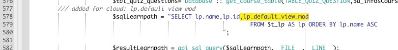
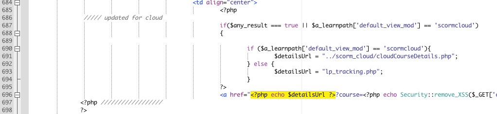
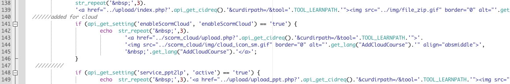
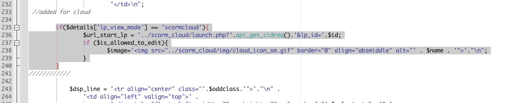
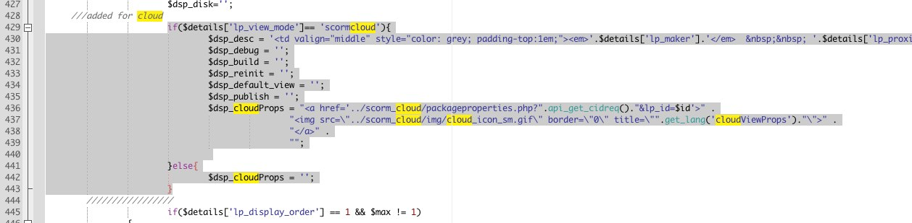
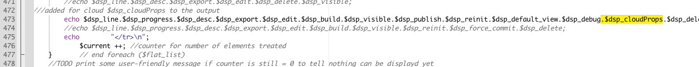
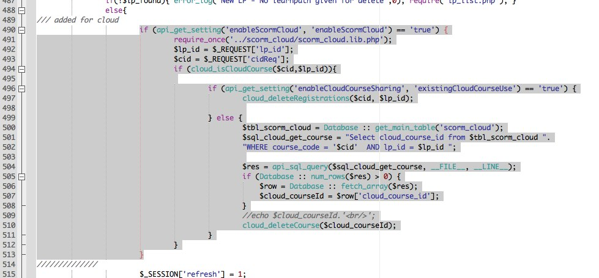
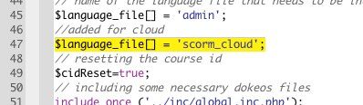
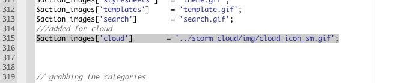

-
main/myspace/mystudents.php
-
code: Add only the highlighted snippet.
,lp.default_view_mod

-
code: The php code block and the highlighted snippet.
<?php
if($any_result === true || $a_learnpath['default_view_mod'] == 'scormcloud'){
if ($a_learnpath['default_view_mod'] == 'scormcloud'){
$detailsUrl = "../scorm_cloud/cloudCourseDetails.php";
} else {
$detailsUrl = "lp_tracking.php";
}
?>
<?php echo $detailsUrl ?>

- main/newscorm/lp_list.php
-
code: Add this code block at line 140.
if (api_get_setting('enableScormCloud', 'enableScormCloud') == 'true') {
echo str_repeat(' ',3).
'<a href="../scorm_cloud/upload.php?'.api_get_cidreq().'&curdirpath=/&tool='.TOOL_LEARNPATH.'">'.
'<img src="../scorm_cloud/img/cloud_icon_sm.gif" border="0" alt="'.get_lang("AddCloudCourse").'" align="absmiddle">'.
' '.get_lang("AddCloudCourse").'</a>';
}

-
code:Add this code block at line 233.
if($details['lp_view_mode'] == 'scormcloud'){
$url_start_lp = '../scorm_cloud/launch.php?'.api_get_cidreq().'&lp_id='.$id;
if ($is_allowed_to_edit){
$image='<img src="../scorm_cloud/img/cloud_icon_sm.gif" border="0" align="absmiddle" alt="' . $name . '">'."\n";
}
}

-
code:Add this code block at line 428
if($details['lp_view_mode']== 'scormcloud'){
$dsp_desc = '<td valign="middle" style="color: grey; padding-top:1em;"><em>'.$details['lp_maker'].'</em> '.$details['lp_proximity'].' '.$details['lp_encoding'].'</td>'."\n";
$dsp_debug = '';
$dsp_build = '';
$dsp_reinit = '';
$dsp_default_view = '';
$dsp_publish = '';
$dsp_cloudProps = "<a href='../scorm_cloud/packageproperties.php?".api_get_cidreq()."&lp_id=$id'>" .
"<img src=\"../scorm_cloud/img/cloud_icon_sm.gif\" border=\"0\" title=\"".get_lang('cloudViewProps')."\">" .
"</a>" .
"";
}else{
$dsp_cloudProps = '';
}

-
code: Add only the highlighted snippet:
.$dsp_cloudProps

- main/newscorm/lp_controller.php
-
code: Add the highlighted snippet.
$language_file[] = 'scorm_cloud';

-
code: Add the following block around line 490.
if (api_get_setting('enableScormCloud', 'enableScormCloud') == 'true') {
require_once('../scorm_cloud/scorm_cloud.lib.php');
$lp_id = $_REQUEST['lp_id'];
$cid = $_REQUEST['cidReq'];
if (cloud_isCloudCourse($cid,$lp_id)){
if (api_get_setting('enableCloudCourseSharing', 'existingCloudCourseUse') == 'true') {
cloud_deleteRegistrations($cid, $lp_id);
} else {
$tbl_scorm_cloud = Database :: get_main_table('scorm_cloud');
$sql_cloud_get_course = "Select cloud_course_id from $tbl_scorm_cloud ".
"WHERE course_code = '$cid' AND lp_id = $lp_id ";
$res = api_sql_query($sql_cloud_get_course, __FILE__, __LINE__);
if (Database :: num_rows($res) > 0) {
$row = Database :: fetch_array($res);
$cloud_courseId = $row['cloud_course_id'];
}
//echo $cloud_courseId.'<br/>';
cloud_deleteCourse($cloud_courseId);
}
}
}

- main/admin/settings.php
-
code: Add the highlighted snippet.
$language_file[] = 'scorm_cloud';

-
code: Add the following line around line 315.
$action_images['cloud'] = '../scorm_cloud/img/cloud_icon_sm.gif';
